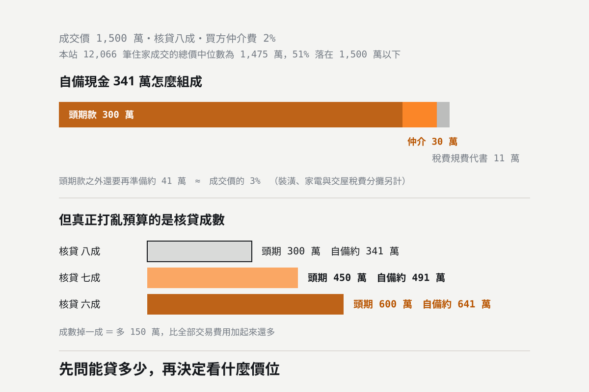

買房要付哪些錢？頭期款之外還要準備多少｜2026 稅費與仲介費一次看
頭期款不是你要準備的全部。以 1,500 萬成交、核貸八成計算，頭期款 300 萬之外還要再加約 41 萬——仲介服務費 30 萬，加上契稅、印花稅、登記規費、抵押權設定、代書與貸款相關費用約 11 萬。而且契稅不是用成交價乘 6%，仲介費的 6% 也是買賣雙方合計的上限。本文逐項拆開，並說明核貸成數掉一成，自備現金要多準備多少。

統計基準：本文的契稅、印花稅、登記規費稅率與納稅義務人，依財政部電子申報繳稅服務網與地政事務所公開資料整理；仲介服務報酬上限依內政部「不動產仲介經紀業報酬計收標準規定」，其用語為向買賣之一方或雙方收取報酬之總額合計不得超過成交價金 6%；貸款成數上限依中央銀行 2026 年 9 月 17 日理監事聯席會議決議，2026 年 9 月 18 日起實施。查核日期 2026-10-14。文中的總價中位數取自本站收錄 255 個社區、成交日期 2020 年 1 月起的 12,066 筆住家實價登錄成交紀錄，統計基準日 2026-10-13。試算中的房屋評定現值、土地申報現值、代書費與貸款雜費均為便於說明的假設值，實際金額依核定契價、登記資料與各業者報價計算。
「我存了 300 萬，可以買 1,500 萬的房子嗎？」這是看屋時最常被問的一句。答案通常是還差一點——頭期款之外，交易當下還有一筆要付現金的費用。
本站收錄的 12,066 筆住家成交中，總價中位數是 1,475 萬，有 51% 的成交落在 1,500 萬以下。所以下面就用 1,500 萬這個貼近中位水準的數字來拆。
買方要付的費用有哪些
| 費用 | 計算方式 | 備註 |
|---|---|---|
| 頭期款 | 成交價 − 實際核貸金額 | 最大的一筆，但不是唯一一筆 |
| 仲介服務費 | 依約定費率 | 買賣雙方合計上限為成交價 6% |
| 契稅 | 建物核定契價 × 6% | 不是成交價 × 6% |
| 印花稅 | 公定契約金額 × 0.1% | 納稅義務人為立約或立據人 |
| 所有權移轉登記費 | 申報地價或權利價值 × 0.1% | 另有書狀費每張 80 元 |
| 抵押權設定登記費 | 設定金額 × 0.1% | 設定金額通常是貸款額的 1.2 倍 |
| 代書費 | 依服務項目 | 過戶與設定通常分開計 |
| 貸款相關費用 | 開辦費、徵信費、火險與地震險 | 各家銀行不同 |
| 履約保證費 | 依方案 | 實務上多由買賣雙方分攤 |
兩個最常被誤會的地方。第一，契稅不是成交價 × 6%，課稅基礎是建物的核定契價（房屋評定標準價格），通常遠低於成交價——1,500 萬的房子，建物核定契價可能只有一百萬出頭。第二，仲介服務費的 6% 是買賣雙方合計的上限，不是賣方 6%、買方再 6%。內政部「不動產仲介經紀業報酬計收標準規定」的用語是「向買賣或租賃之一方或雙方收取報酬之總額合計不得超過」——不論只向一方收，或向雙方分別收，加總都不得超過成交價金的 6%。而且 6% 是上限不是定價，實際費率要事先約定清楚。
1,500 萬的房子，自備現金要多少
假設成交價 1,500 萬、銀行核貸八成（1,200 萬）、買方仲介費 2%。稅費的部分再假設建物核定契價 100 萬、土地申報現值 400 萬（這兩個是為了算給你看而假設的，實際以核定與登記資料為準）：
| 項目 | 計算 | 金額 |
|---|---|---|
| 頭期款 | 1,500 − 1,200 | 300 萬 |
| 仲介服務費 | 1,500 × 2% | 30 萬 |
| 契稅 | 建物核定契價 100 萬 × 6% | 6 萬 |
| 印花稅 | 公契 500 萬 × 0.1% | 0.5 萬 |
| 所有權移轉登記費 | 500 萬 × 0.1% | 0.5 萬 |
| 抵押權設定登記費 | 1,200 萬 × 1.2 ＝ 1,440 萬 × 0.1% | 1.4 萬 |
| 代書費（過戶＋設定） | 依報價 | 約 2 萬 |
| 履保、開辦費、火險地震險 | 依方案與銀行 | 約 1 萬 |
| 合計自備現金 | 約 341 萬 |
也就是說，頭期款 300 萬之外，還要再準備約 41 萬。其中仲介服務費就占了 30 萬，稅費規費與代書、貸款雜費合計約 11 萬。
抵押權設定那一筆常被漏掉。登記費是按「設定金額」算，而設定金額實務上是貸款金額的 1.2 倍——貸 1,200 萬，設定 1,440 萬，登記費 1.4 萬。這筆錢和貸款一起發生，簽約時才被提醒的話很容易措手不及。
真正會打亂預算的不是這些，是核貸成數
上面那些費用加起來 41 萬，聽起來不少，但成數掉一成，頭期款就多 150 萬——這才是量級上的差別：
| 核貸成數 | 貸款金額 | 頭期款 | 自備現金（含費用） |
|---|---|---|---|
| 八成 | 1,200 萬 | 300 萬 | 約 341 萬 |
| 七成 | 1,050 萬 | 450 萬 | 約 491 萬 |
| 六成 | 900 萬 | 600 萬 | 約 641 萬 |
而成數不是你決定的。自 2026 年 9 月 18 日起，自然人第 2 戶的成數上限為 7 成、第 3 戶以上 3 成，兩者都不得有寬限期；高價住宅（高雄為 4,000 萬元以上）上限 3 成。名下沒有房屋的首購族不在這個限制內，但實際成數仍由銀行依物件與個人條件核定。
所以順序應該反過來：先確認能貸多少，再決定看什麼價位的房子。用房貸試算工具把成數、年限、利率填進去，會同時算出月付金、總利息與收入負擔比；首購族可以再用新青安 3.0 試算確認資格與額度。兩個工具頁底下都附了央行現行成數上限的完整對照表。
交屋當天還會再付一次錢
- 01 房屋稅、地價稅的分攤。依交屋日期按比例結算，買方負擔交屋日之後的部分。
- 02 管理費。預繳的部分按日結算，另外多數社區要繳一筆公共基金。
- 03 水電瓦斯的結清。以交屋日的度數為界。
- 04 裝潢與家電。中古屋整理一般抓總價的 5%–10%，要做比較完整的裝潢可能到 20%。這筆不在交易費用裡，但它是真的要花的錢。
- 05 生活準備金。建議在上述全部之外，再留至少半年的生活費。房貸是三十年的事，手上沒有緩衝很危險。
買之前的五個動作
- 01 先問銀行能貸多少，再決定預算。成數差一成就是一百多萬，比所有交易費用加起來還多。
- 02 頭期款之外預留約 3% 的交易費用。以 1,500 萬為例約 41 萬，其中大半是仲介服務費。
- 03 仲介與代書的收費明細先問清楚。6% 是買賣雙方合計的上限，不是定價，要事先約定。
- 04 屋況、產權與貸款條件一起查。屋齡太高或坪數太小都可能影響核貸成數。
- 05 留裝修與生活的預備金。交屋不是終點，是開始繳錢的起點。
同樣 1,500 萬，在四個生活圈買到的不一樣
預算抓好之後，下一步是看這個價位在你要的區域買得到什麼。各區的總價門檻與坪數結構差距不小，社區總覽收錄 255 個社區的逐筆成交紀錄，可以直接看屋齡、坪數、樓層與車位；想先比較四個生活圈的門檻高低，高雄買房自備款要準備多少那篇用實價登錄把四區的總價與自備款算過一輪。
如果你是換屋族，賣掉舊屋那一邊的費用在賣房要付哪些錢；兩篇合起來看，才知道賣屋淨到手的錢夠不夠付下一間的自備現金。
不確定自己的條件能貸到幾成？成數、利率、寬限期在不同銀行差距不小。把你的狀況告訴我們，澄果團隊幫你評估合理的總價帶與資金規劃。 澄果團隊諮詢電話：07-9766977
資料查核日期：2026 年 10 月 14 日。契稅稅率與納稅義務人、印花稅稅率與納稅義務人依財政部電子申報繳稅服務網；所有權移轉登記費、他項權利設定登記費與書狀費依地政事務所公開之規費標準；仲介服務報酬上限依內政部公告之不動產仲介經紀業報酬計收標準；貸款成數上限依中央銀行 2026 年 9 月 17 日理監事聯席會議決議。總價中位數取自本站收錄 255 個社區、2020 年 1 月起的 12,066 筆住家成交紀錄。試算中的建物核定契價、土地申報現值、代書費、履保與貸款雜費均為假設值，實際金額依核定契價、登記資料與各業者報價計算；裝潢與家電另計。